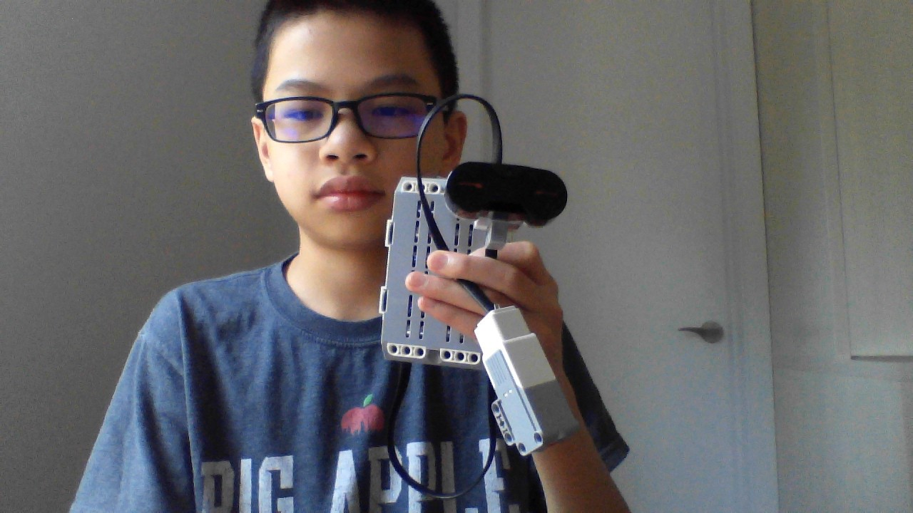
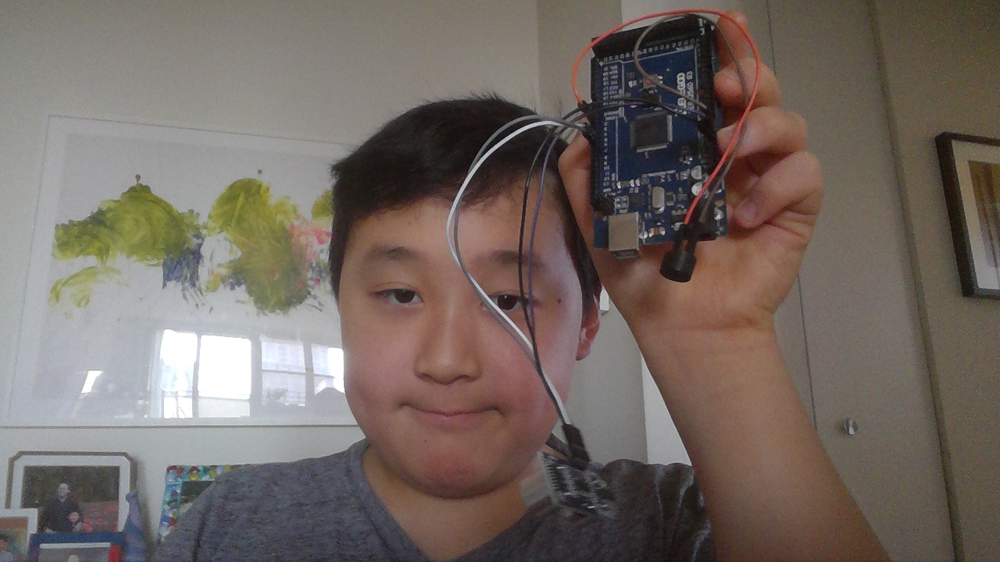
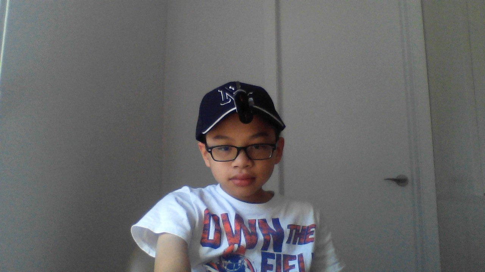

This is the site for our MIT project.
Our goal for this project was to make a machine using a hat to make a sensor. The idea was that it could tell the blind if they were about to hit something.
The makers of this faboulous prototype
Designed by Bennett Choi, Jonathan Wee, and Lucas Kawaja
Built by Bennett Choi and Jonathan Wee
Final design by Bennett Choi, Jonthan Wee, and Lucas Kawaja
Our special thanks to...
Mr. Reardon our excellent Science teacher!
Our fabulous moms for contributing to this amazing prototype
Who are Christina Wee, Shirley Choi, and Flavia Kawaja
Here is a photo of an expermental sensor. Sadly, it did not work.
One of the makers of the project (Jonathan) holding up his final design.
